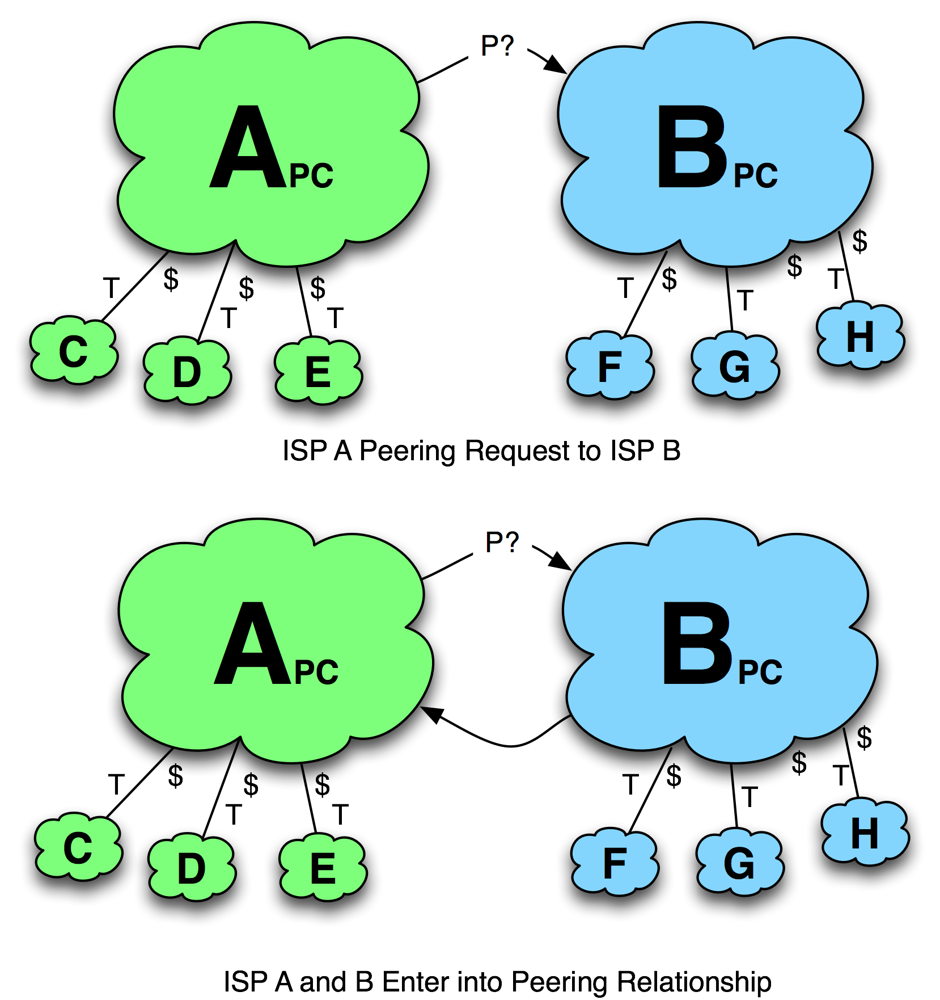
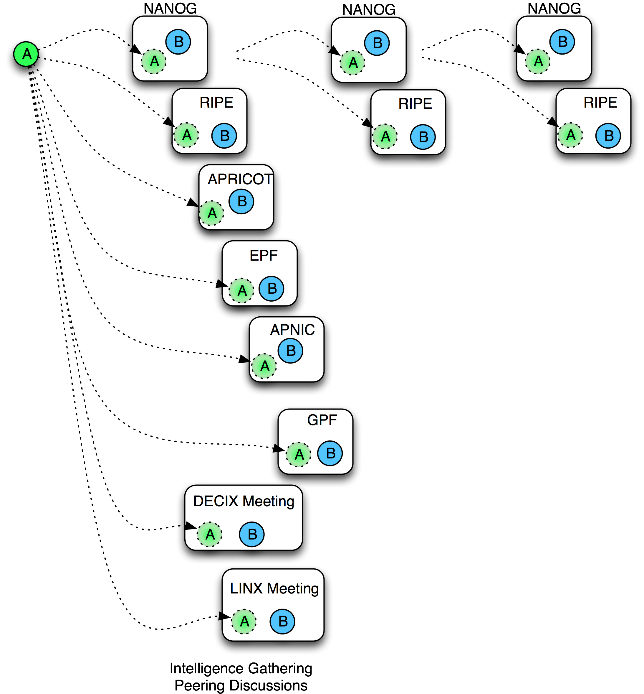
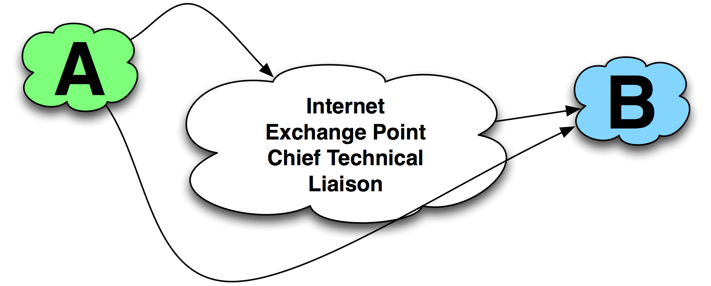

Tactic 1. The Extended Direct Approach
“Success is the ability to go from one failure to another with no loss of enthusiasm.”
– Winston ChurchillThe most common way to obtain peering is to simply ask for it (Figure 11-8).
The trick here is how to request peering.
It is important to understand the internal motivations of the target ISP. The handling of peering requests is often seen as not “real network engineering” within many ISP network engineering teams. As a result, many ISPs allocate this duty as an on-duty weekly rotation. Many of the network engineers have learned that if they ignore peering requests during their week, the requestor will resend the request next week and someone else will have to deal with it. As a result, there are no shortages of excuses why a peering request could have been ignored. Don’t make it easy to drop the peering request.
The extended direct approach tactic here is to:
- Identify the right contact.
- Know the target peering prerequisites.
- Communicate the right information.
- Use the best method for contact.
- Use social engineering to make the request as easy as possible for the ISP to act upon.

Figure 11-8. Tactic 1 - The Direct Approach.
The Right Contact
The following material is an excerpt from Chapter 4 – Internet Peering and is repeated here for convenience.
Top 10 ways seasoned peering coordinators contact target ISPs
- Face-to-face at informal meetings in an “open” Internet Operations forums like NANOG, IETF, RIPE, APNIC, AFNOG, etc. (Here “open” means anyone can attend.)
- Face-to-face at “selective” commercially-sponsored peering forums like the Global Peering Forum (Here “selective” means there are some prerequisites to attend, like being a customer of a GPF IXP sponsor.)
- Face-to-face at “selective” IXP Member Meetings like DE-CIX, LINX, or AMS-IXP member meetings
- Via introductions made through an IXP Chief Technical Liaison or a peer that knows the right contact
- Via electronic mail, using the pseudo standard peering@ispdomain.net or a personal contact
- From contacts listed on an exchange point participant list, or peeringdb registrations
- With tech-c or admin-c from DNS or ASN registries
- Through a search for “peering contact $ASN peering”
- From the target ISP sales force, at trade show or as part of sales process
- From the target ISP NOC
We will start by exploring the direct peering approach along with the back-door alternatives that seasoned peering coordinators use.
1A - E-mail Peering Requests
The direct by-the-rules approach is to send e-mail to peering@ispdomain.net as shown in Figure 11-9. Alternatively, there are many ways to find the e-mail address for an individual peering person. Dealing directly with an identifiable person as opposed to a role account may help increase the chances of a response (also shown in Figure 11-9). It is socially harder to ignore a person-to-person e-mail than to ignore a person-to-role e-mail.
While these conferences can be a lot of fun, you are there to seek information about your target peers. For example, “Whom do they peer with now?” If they were involved with a de-peering, what was the cause?
General information about the particular Internet Peering Ecosystem is important to discover, and it is easy in face-to-face meetings. You want to find out who the key players are and what the market prices are for transit, transport, colocation, etc. Assembling the business case for peering in the region is a critical stage for the initiator, and doing so provides credibility to the target. Familiarity with the region is important and can help maximize the likelihood of acceptance of a peering request. Most of this information is freely and readily exchanged among peering people within the community.
As a general rule, I estimate the travel budget to cost around $1000 for each domestic conference, $5000 to attend a nearby international conference, and $10,000 for far-away international conferences. A travel budget for introduction into a region might include five domestic, five international, and three far-away international conferences, for about $50,000 per year.

Figure 11-9. Communicating with a person, not an alias.
The Problems with E-mail Peering Requests
E-mail is a tough communications medium for peering interactions. It is not clear how much information is needed for the interaction, or whether the target will be receptive to the overtures.
Here are the top problems with e-mailing peering requests:
- Which e-mail address? In some cases it is not at all clear which peering e-mail address to use when communicating with the target ISP. In some regions ISPs use peering@ispdomain.net as an alias for peering requests, while others use netops@ispdomain.net or peering.coordinator.name@ispdomain.net, etc.
- Not enough information in the peering request. One peering coordinator complained about constantly receiving peering requests without the basic information like AS#, amount of traffic involved, where the requester wants to peer, etc.
- Poor grammar. Others complained that some peering requests were very hard to decipher, and the peering coordinator lamented that the peering discussion that might ensue would similarly be difficult to decipher. (We examined a sample poor peering request in chapter 4.) These e-mail peering requests will ultimately drop through the cracks.
- Too much information in peering request. Still others complained that too much information made the peering request seem too burdensome to process.
- Ignorance of the peer. The notion of a “peer” includes the idea that both networks are of similar scope and scale of infrastructure and would benefit about equally from the relationship. The target peering coordinator may not know enough about the initiating ISP, so may not see the initiating ISP as a true “peer.” This ignorance may result in the target’s being unmotivated to pursue the relationship. Startup ISPs tend to be somewhat optimistic about their traffic growth futures, and since so many ISPs use intuition to determine whom to peer with, it is difficult for these unknown companies to be seen as true “peers.”
- Cultural issues. One Japanese ISP shared that it was common in Japanese ISPs to have a person with the job of translating the “rude” English peering request into a “polite” Japanese peering request. E-mail misunderstandings go in both directions.
Because of these challenges, person-to-person (ideally face-to-face) discussions help speed things along.
1B Maximize Face Time
Since face-to-face conversations improve the likelihood of obtaining peering, a popular strategy is to attend as many Internet operations conferences as possible (Figure 11-10).
The goals of attending the conferences are to:
- Collect peering intelligence.
- Maximize the chances of meeting the peering coordinator’s target ISPs.
- Be seen as a regular in the peering coordinator community.
While these conferences can be a lot of fun, you are there to seek information about your target peers. For example, “Whom do they peer with now?” If they were involved with a de-peering, what was the cause?
General information about the particular Internet Peering Ecosystem is important to discover, and it is easy in face-to-face meetings. You want to find out who the key players are and what the market prices are for transit, transport, colocation, etc. Assembling the business case for peering in the region is a critical stage for the initiator, and doing so provides credibility to the target. Familiarity with the region is important and can help maximize the likelihood of acceptance of a peering request. Most of this information is freely and readily exchanged among peering people within the community.
As a general rule, I estimate the travel budget to cost around $1000 for each domestic conference, $5000 to attend a nearby international conference, and $10,000 for far-away international conferences. A travel budget for introduction into a region might include five domestic, five international, and three far-away international conferences, for about $50,000 per year.
Figure 11-10. Getting face time at Internet operations meetings.
1C - Leverage the IXP Resources
Here we really leverage the IXP’s aligned interests to get you peering. The successful IXP has a person tasked with maximizing the value of its IXP by facilitating peering. This person performs this task with introductions, by meeting with customers and sharing contact information, by establishing a relationship with the peering coordinators to maximizing their peering, and by evangelizing peering at forums. This person is in a good position to provide introductions and promote you in the peering community (Figure 11-11).

Figure 11-11. Leverage someone who knows everyone.
Notes from the field.
Chief Technical Liaison Role
In the early days of Equinix, I would join the newbie peering coordinator to make a half dozen peering calls. I would start with people I knew would be receptive to the conversation, people who would be pleasant if not enthusiastically affirmative. After these calls the peering coordinator felt comfortable enough with the process to start making calls and meet these people face-to-face at peering forums. He would eventually became a peering consultant, helping a bunch of smaller ISPs and content companies get their peering infrastructure and sessions in place.
As Co-Founder and Chief Technical Liaison, I spent 90% of my time on the road doing research, introducing peering people to each other (hundreds of these), and running peering forums. All of these activities exposed me to peering people I could introduce to others.
If the direct approach yields no answer, the peering coordinator might reach out to an internal advocate at the target ISP, as described in the next tactic.